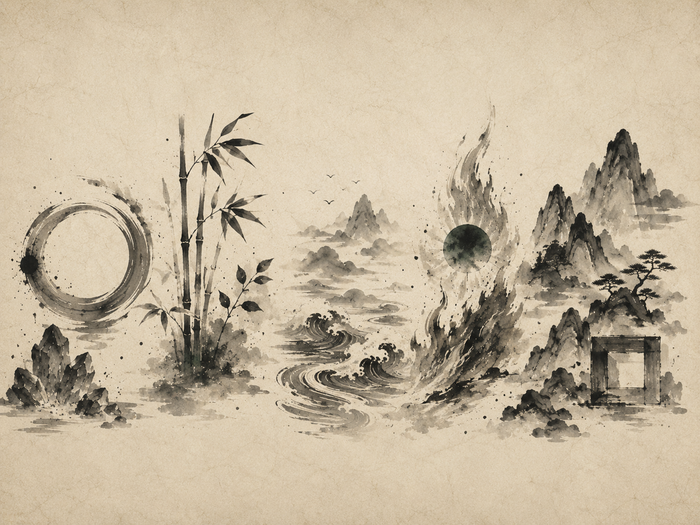
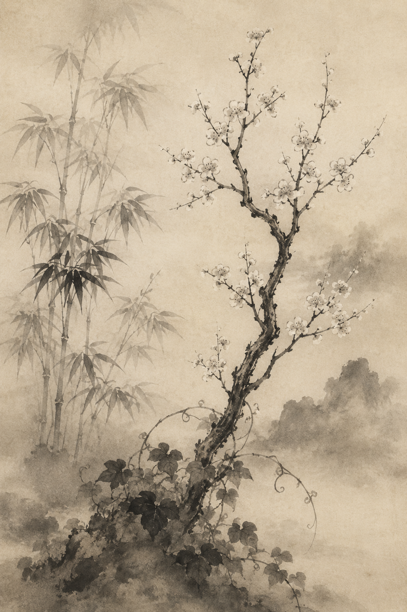
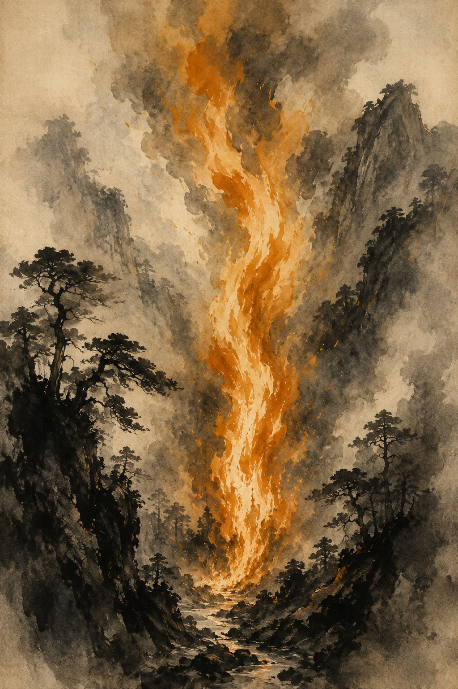
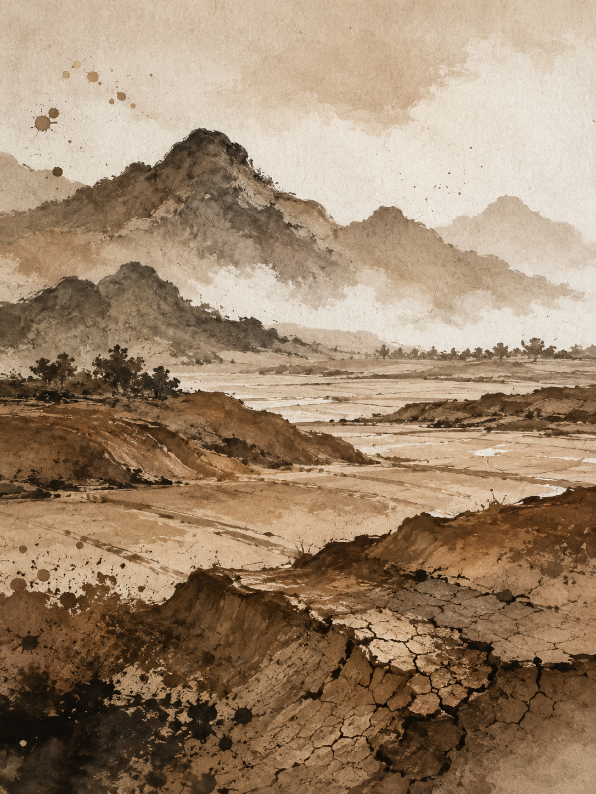
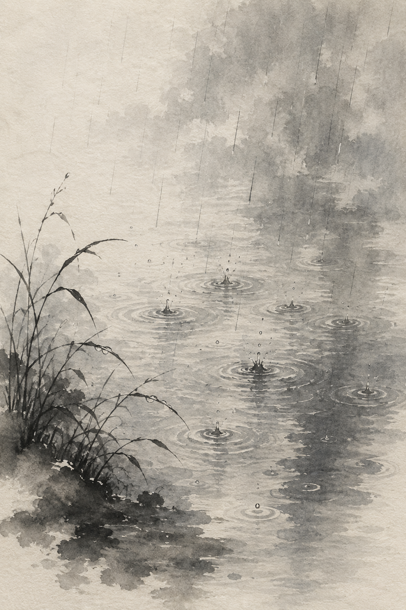

Iconography guidance · §11 Ten Stems & Five Elements 十 天 干 · 五 行
One iconography, two tiers. Five geometric element marks carry the system at small sizes; ten painterly stem seals carry it at ceremonial scale. Every stem is a child of one element — five marks bloom into ten seals.
Element marks
Five monochrome silhouettes — one per element. They tint live from the element palette and stay crisp from 16 px upward. The workhorse: badges, filters, ribbons, dense lists.
Stem seals
Ten ink-wash enso seals — one per Heavenly Stem. Transparent-background raster, element-pigmented. Reserved for ceremonial moments: the identity-card day-master, the Reveal hero.
Five Elements
五 行 · the marksThe foundation. Every entity in Elementum — a stem, a reading, a profile facet — resolves to one of five elements, and each element owns a single silhouette mark. These are the most-used glyphs in the product, so they are pure geometry: no color baked in, no texture, legible at a glance.
The five marks
#el-wood
#el-fire
#el-earth
#el-water
Element palette
Source & translation





Ten Heavenly Stems
十 天 干 · the sealsThe expansion. Each element splits into a Yang and a Yin stem — five becomes ten. Where the marks are geometry, the stems are painterly ink-wash enso seals: a complete brush ring around one distinct motif, pigmented to the parent element. They appear only where a single identity is the subject.
The ten seals
Element → stem family
In situ · identity card
- Seal · hero120 × 120 in a circular frame (Reveal §A1). The ink-wash
icons/stems/{stem}.pngscales to108%to bleed just past the ring's inner stroke. One per screen — the subject. - Mark · ribbonThe five-element
#el-*silhouette at 18–28 px, tinted with the element's deep tone, on a pigment-tinted tile. Repeats freely across the composition list. - Never swapDon't shrink a seal into a ribbon row, and don't blow a mark up to hero size. The seal is ceremony; the mark is wayfinding.
- CharacterThe hanzi sits beside the seal (hero) or beside the name (ribbon) — never overlaid on the artwork.
- PairingA stem seal always carries its element's hue. A 庚 seal is slate-Metal; the Metal mark beside it shares the exact
--metalDeep.
Usage · mark vs. seal
Do
- Use an element mark anywhere it repeats — filters, list rows, badges, the composition ribbon.
- Tint marks with the element's
--{el}Deeptone; let pigment carry fills and bars. - Reserve a stem seal for the one identity a screen is about — the day-master hero.
- Keep the seal's full enso ring intact and give it breathing room on a clean surface.
- Always pair a stem with its parent element's hue.
Don't
- Shrink a painterly seal below ~48 px — the brushwork muddies and the ring breaks.
- Scale a geometric mark up to hero size where a seal belongs.
- Hardcode color inside a
#el-*symbol — hue must flow from the host. - Recolor a stem seal away from its element family.
- Lay the hanzi character over the icon artwork.
currentColor symbols. The ten stem seals are painterly ink-wash enso, each finalized as an individual crop and keyed to a transparent background, trim-centered to 440×440 PNGs at icons/stems/{stem}.png. Element pigment is shared across both tiers from one palette (§2): sage Wood, vermilion Fire, ochre Earth, slate Metal, deep-blue Water.
To extend A new element mark joins as another
#el-* symbol on the same 24×24 grid. A new or revised stem seal: send the crop, name the stem, and it is keyed to transparency and dropped into icons/stems/. The two tiers always move together — five marks, ten seals.